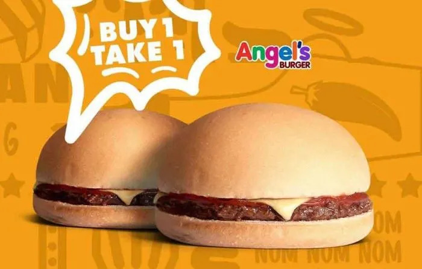

Angels Burger

Description
Angel's Burger is a popular budget-friendly fast-food chain in the Philippines, known for its affordable menu and the "Buy One, Take One" promotion on select items.
The chain was founded in 1997 by Joseph and Victoria Mojica, who named it after their daughter, Angel.
It began as a small burger stand in Quezon City and has since grown to over 1,300 branches nationwide, making it one of the country's leading street stall or kiosk businesses.
Ingredients
- cdo ulam burger
- tinapay
- ketchup
- ketchup
- mayo
- hotsauce
Steps and Prep
- In a bowl, combine all the ingredients. Mix thoroughly.
- Divide the mixture into serving pieces. Roll the mixture into balls then flatten on an even surface
- In a tray with grease-proof paper, arrange patties then cover with plastic. Place in the fridge for at least 30 minutes..
- After 30 minutes. Fry or grill the patties for 3-4 minutes each side or until color turn to brown.
- Serve with mushroom gravy or with buns and sauce.